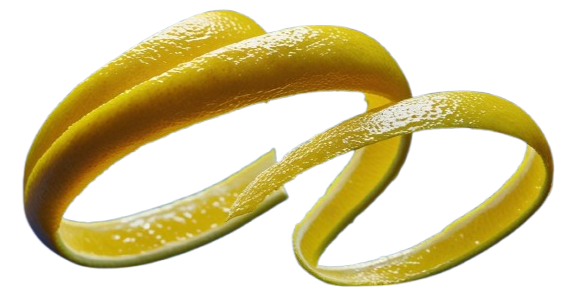
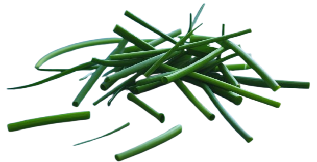

Garnish your widgets
Whilst writing new widgets for Ratatui, a Rust library for cooking up delicious
TUIs (terminal user interfaces)
[Ratatui Developers, 2023]
I experienced some repetitive
coding involving Style and Block which ratatui widgets typically use to configure
the colors, padding, border and title of a widget. The inclusion of Style
and Block in every widget leads not only to repetitive code but also to complexity and inflexibility.
Composition is the Rust way. But what should be composed of what? When composing two items, say a block and a widget, widget can contain block (as in Ratatui), block can contain widget or a new type can be created containing both.
An additional pain point in the Ratatui API is that after setting a Block
you lose access to it, making it impossible to check or modify Block after
construction. I don't see good reasons for changing the visibility of public
items, it sure is inconvenient and not user friendly.
To scratch the itch, I wrote a library that doesn't require widgets to contain
Style and Block or even know about them. As a consequence, it makes it easier
to write widgets and new ways to modify widgets: ratatui-garnish
[Laranja, F., 2025-1]
.
It uses a flexible,
dynamic and type-safe composition pattern for Rust. I found the result interesting
and so wrote this article about it. I hope you find it interesting too!
Widgets, Styles and Blocks
A widget in Ratatui is something that implements one of the Widget traits
Widget, WidgetRef or stateful versions of those. Widget's render
method simply calls render_ref() and then eats your widget. How rude! So
lets look at the implementation of WidgetRef. Many of Ratatui's widgets
follow this template:
pub struct WidgetFoo<'a> {
/// A block to wrap the widget in
block: Option<Block<'a>>,
/// Widget style
style: Style,
// widget specific fields
}
impl WidgetRef for WidgetFoo<'_> {
fn render_ref(&self, area: Rect, buf: &mut Buffer) {
buf.set_style(area, self.style);
self.block.render_ref(area, buf);
let inner = self.block.inner_if_some(area);
self.render_widget_foo(inner, buf);
}
}
Of course, style and block are used in several other methods, the constructor
new and the setter for Block. Style got its own trait, Styled).
Block and Style act the same in each widget, is it necessary to repeat this
code? In addition Block has its own Style, I assume that the widget needs
it own version is because block is optional. I suspect Block has grown, it
acquires more features as the alternative is to change all the
widgets,is it still a block? What is it?
Let's analyze the rendering of a widget. Style and Block are handled first,
here is what happens:
- Style renders before widget renders
- Block renders before widget renders
- Block changes area before widget renders
They both run some code before the widget is rendered, and Block changes the
area parameter for the widget, but they don't change any other aspect
of the widget. The widget doesn't need them. The inclusion of both is repetitive,
leads to complexity and inflexibility.
Let's ask the question “What is composed of what?”. Can we turn the composition
inside out, include widgets in Block (and Style too), the
second composition way:
struct Block<'a> {
widget: Box<dyn WidgetRef>,
/// other block fields
}
impl WidgetRef for Block<'_> {
fn render_ref(&self, area: Rect, buf: &mut Buffer) {
buf.set_style(area, self.style);
self.render_block(area, buf);
let inner = self.inner_area(area);
self.widget.render_ref(inner, buf);
}
}
So Block becomes a wrapper of a widget and implements Widget, it
modifies the input and/or the output of the contained widget. As
it is a widget itself, it suddenly is possible to add two borders
around the widget. Voilà! Now our widgets become like onions:
(Style(Block(Paragraph))).
Oh, clever me, I just reinvented the Decorator Pattern:
Decorator
Intent
Attach additional responsibilities to an object dynamically. Decorators provide a flexible alternative to subclassing for extending functionality.
Also Known As Wrapper
[Gamma et al., 1994]
Luckily Rust doesn't suffer from subclassing, but having a dynamic, flexible way to extend functionality sure is nice to have and is what we need to solve modifying widgets. Indeed the Gang of Four use widgets as an example for the decorator pattern, and I wonder if the name comes from this use.
The gang continues about decorators:
Avoids feature-laden classes high up in the hierarchy. Decorator offers a pay-as-you-go approach to adding responsibilities. Instead of trying to support all foreseeable features in a complex, customizable class, you can define a simple class and add functionality incrementally with Decorator objects. Functionality can be composed from simple pieces.
[Gamma et al., 1994]
Hey, that complex, customizable class, that is the Block widget
right there! And those simple pieces! Yummy! Gimme, gimme, gimme!
Garnishing
Let's build decorators for our widgets. As they are Ratatui widgets,
we are not going to simply decorate them, we are going to garnish them.
I'd like to avoid implementing all the variations of the Widget
trait. Here is a trait to modify widgets:
/// A trait that can modify the rendering of a widget.
pub trait RenderModifier {
/// Modifies the widget's rendering area.
///
/// Returns the adjusted area, typically reduced to account for borders, padding, or shadows.
/// Default implementation returns the input area unchanged.
fn modify_area(&self, area: Rect) -> Rect {
area
}
/// Executes before the widget is rendered.
///
/// Used for pre-rendering effects like setting background styles or drawing shadows.
/// Default implementation does nothing.
fn before_render(&self, _area: Rect, _buf: &mut Buffer) {}
/// Executes after the widget is rendered.
///
/// Used for post-rendering effects like drawing titles over borders.
/// Default implementation does nothing.
fn after_render(&self, _area: Rect, _buf: &mut Buffer) {}
}
Basically the RenderModifier trait provides three ways that a garnish can
modify render methods. The first two come from the current use of Style
and Block in rendering widgets. The last method, after_render, is new.
That is not something the Block widget does. Can you think of a useful
Garnish that renders after the widget has been rendered?
In a way I think the use of the term “decorator pattern” is a bit unfortunate as it implies a certain application. What we really doing is function composition using traits. And this is way more powerful than just decorating a widget with a border.
Garnished Widgets
Let's look again at the composition method. We need a way to combine a
widget with the garnish. There is a problem with this, as I mentioned above the onion
structure that we get, this recursive struct, has some downsides:
the widget and garnishes are neither easy to access, nor modify. Instead
of creating this onion, what about the third way, creating a new type
that wraps the widget and the garnishes? Can we create a struct that
both wraps the widget and a Vec of garnishes? We would be able to
easily access all applied garnishes. We would have all the ways of a
vector to modify the garnishes and we would not need to implement
all variations of Widget for each garnish, only the relevant methods of
RenderModifier. I would like something like:
pub struct GarnishedWidget<W> {
widget: W,
garnishes: Vec<RenderModifier>,
}
Wait a minute! RenderModifier is a trait! No Vec for you!
Well, we could use trait objects, but you know what happens with them: all your
garnishes start looking the same and you can't tell lemon zest from
parsley. Let's use an enum instead so we don't lose our garnishes...
I mean types. To avoid writing the boiler plate for the enum I use the
nodyn! macro provided by the nodyn crate
[Laranja, F., 2025-2]
,
which also helps with this polymorphic Vec we need for our
GarnishedWidget:
use derive_more::{Deref, DerefMut};
nodyn::nodyn! {
#[derive(Debug, Clone)]
pub enum Garnish<'a> {
Style,
Block<'a>,
}
impl is_as;
impl RenderModifier {
fn before_render(&self, area: Rect, buf: &mut Buffer);
fn modify_area(&self, area: Rect) -> Rect;
fn after_render(&self, area: Rect, buf: &mut Buffer);
}
/// A `Vec` of `Garnish` for applying multiple garnishes to widgets.
vec Garnishes;
/// A widget that wraps another widget with a vector of garnishes.
///
/// This struct implements `Deref` and `DerefMut` to the inner widget,
/// allowing you to access the original widget's methods while adding
/// garnish functionality.
#[vec(garnishes)]
#[derive(Debug, Deref, DerefMut)]
pub struct GarnishedWidget<W> {
#[deref]
#[deref_mut]
pub widget: W,
}
}
Note: ratatui-garnish also has a stateful version of
GarnishedWidget for StatefulWidget.
The nodyn! macro generates an enum Garnish which we use as an alternative to
trait objects, the variants are the different garnishes we have:
Style and Block. The macro generates the variant names for us, e.g.
Style expands to Style(Style) and implements From<variant> and
TryInto<Garnish> for easy conversions. With the impl as_is
feature nodyn generates methods like is_style and
try_as_style.
let red_garnish: Garnish = Style::default().fg(Color::Red);
assert!(red_garnish.is_style());
let red_style = red_garnish.try_as_style_ref().unwrap();
assert_eq!(red_style.fg, Some(Color::Red));
The impl RenderModifier block contains the signatures from the
RenderModifier trait. Using this RenderModifier gets implemented
for Garnish by delegating to the variants.
The line vec Garnishes, creates a wrapper around
a Vec<Garnish> with delegated Vec methods and variant-specific
utilities. It supports flexible insertion via Into<Garnish> and provides
methods like first_style, count_style, and all_style for
variant-specific access. The garnishes! macro is also generated
for easy initialization. Garnishes is useful for garnishing
several widgets with the same garnishes.
The #[vec(garnishes)] attribute instructs nodyn to turn the
struct that follows into a polymorphic Vec by adding a field
garnishes with the type of Vec<Garnish>. I used the derive_more
crate
[Fennema, J., 2025]
,
to derive Deref and DerefMut. The resulting GarnishedWidget
acts like the widget it wraps and as a Vec of Garnishes as well. Now
we can simply add garnishes by pushing them to the widget.
Although GarnishedWidget is called a widget, it hasn't got
the traits dude! Let's add:
impl<'a, W: Widget + Clone> Widget for GarnishedWidget<'a, W> {
fn render(self, area: Rect, buf: &mut Buffer) {
let mut area = area;
for g in &self.garnish {
g.before_render(area, buf);
area = g.modify_area(area);
}
self.inner.render(area, buf);
for g in &self.garnish {
g.after_render(area, buf);
}
}
}
impl<'a, W: WidgetRef + Clone> WidgetRef for GarnishedWidget<'a, W> {
fn render_ref(&self, area: Rect, buf: &mut Buffer) {
let mut area = area;
for g in &self.garnish {
g.before_render(area, buf);
area = g.modify_area(area);
}
self.inner.render_ref(area, buf);
for g in &self.garnish {
g.after_render(area, buf);
}
}
}
As you can see the after_render()s are executed in the same order
as the before_render()s, which makes it bit easier to reason about than
the recursive struct from the basic decorator pattern. Let's finish off
our GarnishedWidget by giving it a constructor, and
as push doesn't sound like what a chef does to decorate a dish
lets wrap that and make it chainable:
impl<'a, W> GarnishedWidget<'a, W> {
/// creates a new `garnishedwidget` with a single garnish.
pub fn new<G: Into<Garnish<'a>>>(widget: W, garnish: G) -> Self {
Self {
widget,
garnishes: vec![garnish.into()],
}
}
/// Adds an additional garnish to the widget.
pub fn garnish<G: Into<Garnish<'a>>>(mut self, garnish: G) -> Self {
self.push(garnish);
self
}
}
Instead of composing Style, Block and widgets by including one within another
I created a new struct to combined them all: a flat decorator.
By using a enum instead of trait objects, type erasure is avoided.
This setup is a bit more complex than the basic decorator, but this
initial complexity and the leverage of traits
makes the subsequent implementation of garnishes a breeze.
Garnishable Widgets
To make garnishing widgets even easier, I wrote an extension
traits for for the widget traits that adds a garnish method to
any widget. That method turns the widget in a GarnishedWidget
and adds a garnish.
use ratatui::{style::{Color, Style}, text::Line, widgets::Padding};
use ratatui_garnish::{GarnishableWidget, RenderModifier};
let widget = Line::raw("Hello, World!")
.garnish(Style::default().bg(Color::Blue)) // Background for padded area
.garnish(Padding::horizontal(1)) // Padding on left and right
.garnish(Style::default().bg(Color::Red)) // Background for next padded area
.garnish(Padding::vertical(2)) // Padding on top and bottom
.garnish(Style::default().bg(Color::White)); // Background for the line
As you can see with ratatui-garnish, you can easily turn the
three blockless text widgets from Ratatui Text, Line and Span, into
full widgets with borders, padding & titles.
Garnishes
Now we start implementing garnishes, in the example above I used Style and Block as
variants of the Garnish enum, so ratatui-garnish offers the same functionality
as Ratatui, we implement Garnish for both:
impl Garnish for Style {
fn before_render(&self, area: Rect, buf: &mut Buffer) {
buf.set_style(area, *self);
}
}
impl<'a> Garnish for Block<'a> {
fn modify_area(&self, area: Rect) -> Rect {
self.inner(area)
}
fn before_render(&self, area: Rect, buf: &mut Buffer) {
self.render_ref(area, buf);
}
}
Block can do lots of things: it has its own Style, it can render a border with
titles and add padding. I like to split this up in light weight, simpler garnishes,
which can than easily be combined in all kind of ways. Style
we already have. For padding we can use the Padding struct that Block uses:
use ratatui::widgets::Padding;
impl Garnish for Padding {
fn modify_area(&self, area: Rect) -> Rect {
Rect {
x: area.x + self.left,
y: area.y + self.top,
width: area.width.saturating_sub(self.left + self.right),
height: area.height.saturating_sub(self.top + self.bottom),
}
}
}
Available garnishes
Instead of Block, ratatui-garnish uses many simple garnishes
to provide similar functionality. As this article's focus is on
the design pattern used, I won't go over the implementation of
all garnishes, but give a summary of the garnishes included in
version 0.1.0 (more garnishes are planned).
Borders
- Standard:
PlainBorder,RoundedBorder,DoubleBorder,ThickBorder - Dashed variants:
DashedBorder,RoundedDashedBorder,ThickDashedBorder, - Custom:
CharBorder(single character, e.g.,****),CustomBorder(fully customizable character set) - Specialty:
QuadrantInsideBorder,QuadrantOutsideBorder,FatInsideBorder,FatOutsideBorder
Titles
- Horizontal:
Title<Top>(over top border),Title<Bottom>(over bottom border),Title<Above>(reserves space above),Title<Below>(reserves space below) - Vertical:
Title<Left>(over left border),Title<Right>(over right border),Title<Before>(reserves space left),Title<After>(reserves space right)
Shadows
Shadow(light░, medium▒, dark▓, or full█shades with full-character offsets)HalfShadow(full█or quadrant characters with half-character offsets)
Built-in Ratatui Support
Style(background colors, text styling)Padding(spacing around the widget)
Have a look at the
source of ratatui-garnish to look at how easy it is to
implement a garnish, implement one or more of the methods from
RenderModifier, that's all! And if you wondered about a use of after_render,
have a look at the Title<Top> garnish from the title module, it renders
over the top row of the widgets Area.
Garnishes
There are quite a number of garnishes! To make it easy to apply
the same set of garnishes to multiple widgets, ratatui-garnish has a
special Vec<Garnish> called Garnishes. As GarnishedWidget
also acts as a Vec<Garnish> you can use its extend_from_slice
and extend methods to add Garnishes:
use ratatui_garnish::{
GarnishedWidget, GarnishableWidget, RenderModifier,
title::{Title, Top},
border::DoubleBorder, garnishes,
};
use ratatui::{text::Line, widgets::Padding};
use ratatui::style::{Color, Style, Modifier};
let garnishes = garnishes![
Style::default().fg(Color::Blue),
DoubleBorder::default(),
Padding::uniform(2),
Style::default().fg(Color::White),
];
let mut widget = GarnishedWidget::from(Line::raw("First widget"));
widget.extend_from_slice(&garnishes);
let mut other_widget = Line::raw("Other widget")
.garnish(
Title::<Top>::styled("Second", Style::default().fg(Color::Green))
.margin(1));
other_widget.extend(garnishes);
A serializable Garnishes would make it easy
to make Ratatui applications themeable.
Regrettably I could not make Garnishes serializable with serde
as the Title garnishes are a wrapper around
ratatui::text::Line which doesn't implement Serialize and
Deserialize.
Recipes
Here are some examples with screenshots of what you can do with ratatui-garnish. I only show the garnishes used, the complete code can be found in the examples directory in the github repo.
Padding
This example shows a combination of Style and Padding
garnishes on a ratatui::text::Line widget.
To run this example:
git clone http://github.com/franklaranja/ratatui-garnish
cd ratatui-garnish
cargo run --example padding
garnishes![
Style::default().bg(ORANGE400),
Padding::vertical(1),
Style::default().bg(ORANGE600),
Padding::horizontal(2),
Style::default().bg(BLUE100),
Padding::left(2),
Style::default().bg(BLUE200),
Padding::top(1),
Style::default().bg(BLUE300),
Padding::right(2),
Style::default().bg(BLUE400),
Padding::bottom(1),
Style::default().bg(BLUE500),
Padding::left(2),
Style::default().bg(BLUE600),
Padding::top(1),
Style::default().bg(BLUE700),
Padding::right(2),
Style::default().bg(BLUE800),
Padding::bottom(1),
Style::default().bg(BLUE900),
Padding::top(1),
Borders
You can add any combination of borders to a widget, in this
example it is again a ratatui::text::Line.
To run this example:
cargo run --example borders
garnishes![
Style::default().fg(Color::Rgb(220, 0, 0)),
CustomBorder::new(BorderSet::dashed().corners('♥')),
Padding::proportional(1),
CharBorder::new('♥').borders(Borders::TOP | Borders::BOTTOM),
Padding::horizontal(1),
Style::default().fg(GREEN700),
PlainBorder::default(),
Padding::horizontal(1),
Style::default().fg(GREEN600),
PlainBorder::default(),
Padding::horizontal(1),
Style::default().fg(GREEN500),
PlainBorder::default(),
Padding::top(1),
];
Titles
This example shows the title garnishes, notice the difference between titles that reserve space (the triangles) and those that render over the border.
To run this example:
cargo run --example titles
garnishes![
Title::<Above>::styled("▲", Style::default().fg(ORANGE500)).centered(),
Title::<Below>::styled("▼", Style::default().fg(BLUE500)).centered(),
Title::<Before>::styled("◀", Style::default().fg(PURPLE500)).centered(),
Title::<After>::styled("▶", Style::default().fg(GREEN500)).centered(),
Padding::horizontal(1),
Title::<Top>::styled(" top ", Style::default().fg(ORANGE200)).centered(),
Title::<Bottom>::styled(" bottom ", Style::default().fg(BLUE200)).centered(),
Title::<Left>::styled(" left ", Style::default().fg(PURPLE200)).centered(),
Title::<Right>::styled(" right ", Style::default().fg(GREEN200)).centered(),
RoundedBorder::default(),
Padding::top(4),
];
Shadow
Here we add a Title::<Above> and a HalfShadow to a
ratatui::widgets::Paragraph widget.
To run this example:
cargo run --example shadow
garnishes![
Style::default().fg(BLUE600),
HalfShadow::default(),
Title::<Above>::styled(
"From \"The Rust Programming Language\"",
Style::default().bg(ORANGE400).fg(BLUE900)
).centered(),
Style::default().bg(ORANGE100).fg(ORANGE700),
Padding::proportional(2),
];
Compositions compared
In this article we looked at three way to compose to types of structs (A and B) in Rust,
- Include struct B in struct A. (Style & Block in ratatui Widgets)
- Include struct A in struct B. (Traditional decorator pattern)
- Include struct A and B in struct C. (ratatui-garnish)
-
blockBlock
-
titles
-
Position
-
Line
-
-
titles_styleStyle
-
titles_alignmentAlignment
-
titles_positionPosition
-
bordersBorders
-
border_styleStyle
-
border_setborder::Set
-
styleStyle
-
paddingPadding
-
-
styleStyle
-
wrapWraptextTextscrollScrollalignmentAlignment
Decorator pattern in Rust
In Rust the decorator pattern consists of a trait, objects implementing the trait and wrappers (decorators) modifying the trait. The decorators typically use either generics [Snoek, I., 2023] or trait objects [lpxxn, 2025] and green tea , to wrap the objects.
See [Drysdale, D., 2024] for a comparison of generics with trait objects.
Style- style fields...
-
widgetBorder
- border fields...
-
widgetPadding
- padding fields...
-
widgetParagraph
-
wrapWraptextTextscrollScrollalignmentAlignment
-
GarnishedWidget-
widgetParagraph
-
wrapWraptextTextscrollScrollalignmentAlignmentgarnishesGarnish
-
StyleStyle
-
Border
-
Title
-
Padding
Flat Decorator Pattern
The flat decorator pattern that I described here seems a useful composition pattern for Rust. When implemented using enum polymorphism, it offers a type-safe, flexible and dynamic solution. Being capable of more than decorating widgets, maybe composite trait modifier is a better name for this powerful pattern. The closest pattern that I could find in Rust is the middleware pattern used by Axum [Tokio Developers, 2025] , which is based on closures.
When you find good use for this pattern I would like to hear about it!
References
-
, 2024. Effective Rust: 35 Specific Ways to Improve Your Rust Code. O’Reilly Media. [Chapter 2. Traits]
-
, 1994. Design Patterns: Elements of Reusable Object-Oriented Software. Addison-Wesley. [Defines the traditional decorator pattern]
-
, 2025. The Rust Programming Language. http://doc.rust-lang.org/book/ch18-02-trait-objects.html. [18.2 Using Trait Objects That Allow for Values of Different Types]
-
, 2025. Rust Design Patterns. https://github.com/lpxxn/rust-design-pattern. [Rust decorator pattern using trait objects]
-
, 2022. Code like a Pro in Rust. Manning. [10.5 Struct tagging.]
-
, 2023. The Decorator pattern: an easy way to add functionality. https://www.hackingwithrust.net/2023/06/03/the-decorator-pattern-an-easy-way-to-add-functionality/. [Rust decorator pattern using generics]
-